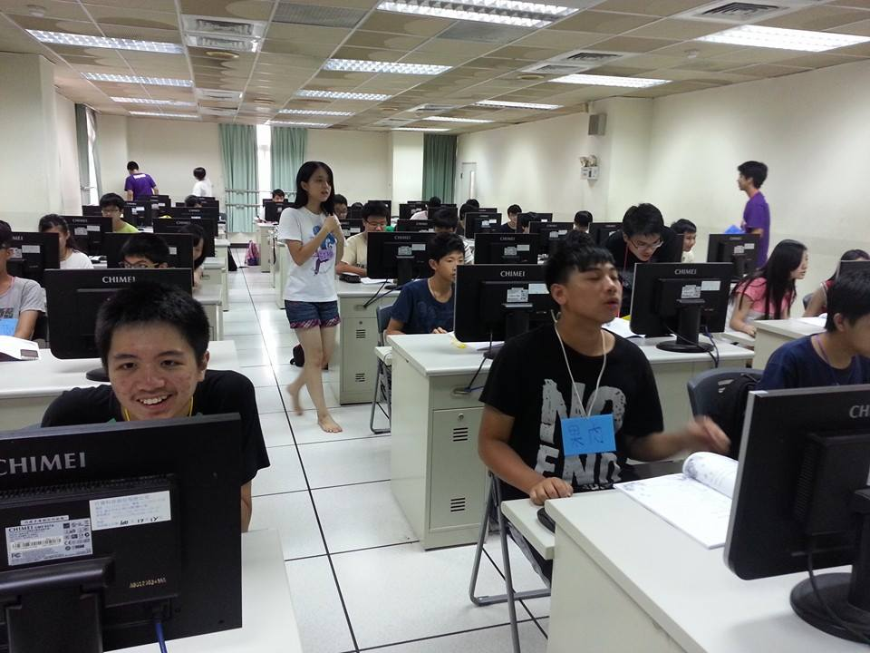
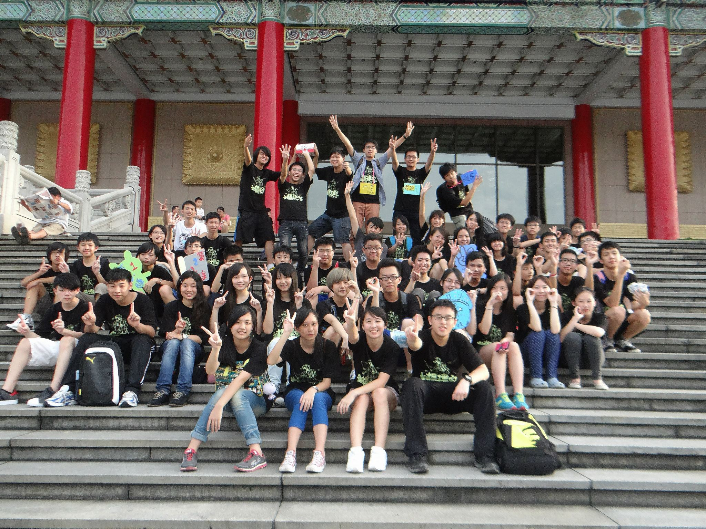

Why INFOR?無可否認的，資訊是未來最需具備的能力之一。人類生活已經大量依賴近數十年來進展迅速的資訊科技(Information Technology, IT)，從網路服務、行動裝置到最新的穿戴裝備、資料探勘等等領域，都是資訊科技的直接產物！培養資訊能力能讓你不再被這些科技主宰，而是可以深入剖析、動手創造，把創意用科技實現！ 資訊社是你進入資訊領域的敲門磚，如果你已經對資訊領域有興趣，你可以認識許多志同道合的人、得到更多的資源，並能與強者一起學習，嘗試用top-down的方式解決問題，迅速提升自己的能力與增加經驗；如果你是初學者，我們會一步一步帶領你學會各種軟、硬體技術，用bottom-up的方式構築堅強的實力。 |

課程
在學習的過程中遇到任何困難，我們都很樂意一起討論、教學相長，我們自己在學習中的經驗與找到的資源就是你們學習的最佳助力！從這些課程中，我們希望啟發你對資訊領域的興趣與熱忱、體驗資訊科技的強大，更期許每個人都能建立自主學習的能力並持續鑽研！ 前往課程
活動
我們有許多與友社合辦的活動，包括： 北區八校聯合迎新、聯合社課、建楓暑訓、秋遊、建景寒訓、春遊等等，此外每屆也會舉辦一次正式的成果發表會，邀請全國70幾個學校的電腦、資訊相關社團參與。 相信這麼豐富的活動，能讓你結交各式各樣的朋友，學會溝通、合作、領導等重要的能力，並成為一個全方位的人才。 前往活動
